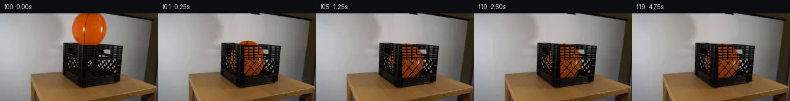

![首帧]()

Round 00
2026-11-04T20:13:52.958118+00:00像素候选变化代码 +247/−0inspection 更新
pixels 6999dea230bbb69a · code 689301bb5317ac2f
查看本轮 generate.py 真实 diff
--- previous/generate.py
+++ current/generate.py
@@ -0,0 +1,247 @@
+"""Local photograph compositing with analytic gravity and foreground occlusion.
+No external images, models, or rendering engines are used.
+"""
+from pathlib import Path
+import json
+import math
+import cv2
+import numpy as np
+from PIL import Image, ImageDraw
+from scipy.ndimage import gaussian_filter, map_coordinates
+import artifact_io
+
+ROOT = Path(__file__).resolve().parent
+TMP = ROOT / '.tmp'
+TMP.mkdir(exist_ok=True)
+W, H, S = 256, 144, 4
+src = np.array(Image.open(ROOT / 'first_frame.png').convert('RGB'))
+yy, xx = np.mgrid[:H, :W]
+
+# Extract the orange silhouette; highlights and seams remain inside its outline.
+orange = ((src[..., 0] > 110) & (src[..., 0] > src[..., 1] * 1.35)
+ & (src[..., 1] > 25) & (yy < 53)).astype(np.uint8)
+contours, _ = cv2.findContours(orange, cv2.RETR_EXTERNAL, cv2.CHAIN_APPROX_SIMPLE)
+ball_mask = np.zeros((H, W), np.uint8)
+cv2.drawContours(ball_mask, [max(contours, key=cv2.contourArea)], -1, 255, -1)
+remove = cv2.dilate(ball_mask, np.ones((3, 3), np.uint8)) / 255.
+
+# A cubic wall fit from immediately adjacent visible wall. Exclude the wall's
+# black upper strip, crate, and the orange silhouette. Coordinates normalized
+# around this small neighborhood make the polynomial fit well conditioned.
+def basis(x, y):
+ x = (x - 145.) / 60.
+ y = (y - 24.) / 40.
+ return np.stack([np.ones_like(x), x, y, x*x, x*y, y*y,
+ x*x*x, x*x*y, x*y*y, y*y*y], axis=-1)
+strip_y = 0.1135 * xx - 18.3
+wall = ((xx >= 85) & (xx <= 205) & (yy <= 63) & (remove < .1)
+ & ~((xx >= 101) & (yy >= 47)) & (yy > strip_y + 4))
+coef = np.linalg.lstsq(basis(xx[wall], yy[wall]), src[wall].astype(float), rcond=None)[0]
+wall_fill = np.clip(basis(xx, yy) @ coef, 0, 255)
+background = src.astype(float) * (1 - remove[..., None]) + wall_fill * remove[..., None]
+# Continue the original sloping black strip only where the ball hid it.
+line = np.clip(1.9 - np.abs(yy - strip_y), 0, 1) * (xx > 150) * remove
+background = background * (1-line[..., None]) + np.array([22, 21, 17]) * line[..., None]
+# Hidden piece of the crate's dark upper lip; reconstruction is restricted
+# to pixels previously occupied by the source ball.
+rim_y = 48.6 + .043 * (xx-103)
+rim = np.clip(2.15 - np.abs(yy-rim_y-.9), 0, 1) * (xx >= 103) * (xx <= 198) * remove
+rim_color = np.stack([22 + 3*np.sin(xx*.45), 22+3*np.sin(xx*.45), 20+3*np.sin(xx*.45)], -1)
+background = background*(1-rim[..., None]) + rim_color*rim[..., None]
+background = np.clip(background, 0, 255)
+
+# Front-facing aperture reconstruction, supersampled for subpixel ribs.
+# Only cavities are writable; all thick posts, lip and bottom band remain
+# original photograph pixels. The back grille visible through the old empty
+# crate is naturally replaced where the ball blocks it.
+def blank():
+ return Image.new('L', (W*S, H*S), 0)
+def polygon(draw, points, fill):
+ draw.polygon([(round(x*S), round(y*S)) for x,y in points], fill=fill)
+def line(draw, points, fill, width):
+ draw.line([(round(x*S), round(y*S)) for x,y in points], fill=fill,
+ width=round(width*S))
+mesh = blank(); d = ImageDraw.Draw(mesh)
+polygon(d, [(140.0,76.8),(190.3,74.7),(188.8,100.9),(139.8,106.0)],255)
+# Near lattice diagonal rib families measured from the visible photograph.
+for a,b in [((136,73),(165,105)),((147,73),(177,104)),
+ ((159,73),(189,103)),((172,73),(193,96)),((184,72),(195,84)),
+ ((151,73),(136,91)),((163,73),(137,105)),
+ ((175,73),(148,106)),((188,73),(160,105)),((199,73),(173,104))]:
+ line(d,[a,b],0,1.55)
+# Dense rectangular grille above the diamond lattice.
+for left,right in [(139.8,145.9),(148.0,153.8),(156.2,162.0),
+ (164.0,170.0),(172.0,178.3),(180.4,186.2),(188.2,192.3)]:
+ for top,bottom in [(55.3,58.1),(60.1,62.9),(64.8,67.4),(69.5,72.0),(74.0,75.7)]:
+ slope = -.020 * (left-140)
+ polygon(d,[(left,top+slope),(right,top+slope),
+ (right,bottom+slope),(left,bottom+slope)],255)
+# Handle slot with the original curved, slightly asymmetric outline.
+polygon(d,[(168.0,59.7),(176.8,59.9),(179.0,61.0),(178.7,66.2),
+ (168.0,65.7),(165.7,62.1)],255)
+# Narrow side wall openings, strongly foreshortened.
+side = blank(); sd=ImageDraw.Draw(side)
+polygon(sd,[(105,70),(126.3,77.4),(125.8,108),(104.7,94.2)],255)
+for x in [104.8,110.0,116.2,122.0,126.0]:
+ line(sd,[(x,69),(x-.5,110)],0,1.4)
+for offset in range(-12,34,6):
… diff truncated; 160 more lines …